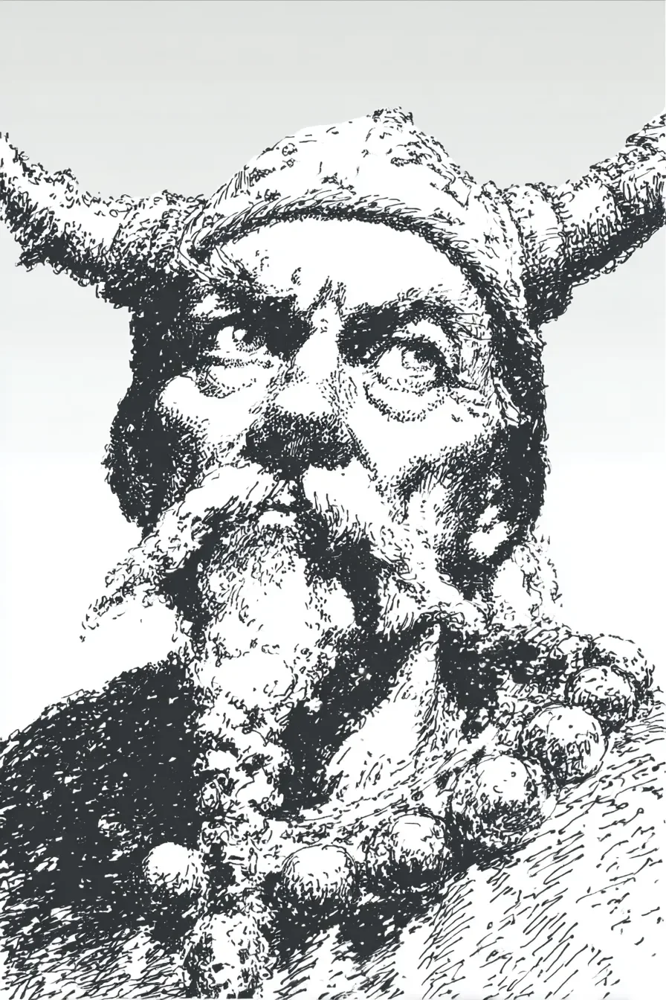

이 날은 적의 방패와 뼈를 위해 벼렸지, 조상들의 살아있는 심재를 위해 벼린 것이 아니었다.\
This edge was honed for enemy shields and bone, not the living heartwood of his ancestors.
조상의 참나무가 공터를 지배하고 있었고, 그 껍질은 혈통의 룬 문자로 새겨진 상처의 역사였다. 그의 형제의 피부가 이제 막 배우도록 강요당한 역사였다.\
The ancestral oak ruled the clearing, its bark a history of scars carved in their lineage's runes. It was a history his brother's own skin was now forced to learn.
바람이 나뭇잎 사이로 지나갔다. 속삭임이 아니라 숨결이었다. 그리고 그 숨결 속에서 그는 어머니가 이 아들이든 저 아들이든 한 명은 살려달라고 애원하는 목소리를 들었다.\
A wind moved through the leaves, not with a whisper, but a breath—and in that breath, he heard his mother's voice begging him to spare one son, or the other.
이것은 족장의 명령이 아니었다. 이것은 공포의 눈 뒤에 갇힌 형제의 애원이었다. 그의 말은 불쏘시개처럼 갈라졌고, 그의 영혼은 수액처럼 묽어지고 있었다.\
This was no chieftain's command. This was the plea of a brother trapped behind eyes of terror, his words cracking like kindling, his soul thinning into sap.
그는 도끼를 들었다. 달이 그 날에 빛을 바쳤다. 그것은 전사의 도구의 빛이 아니라, 영혼을 육체로부터 영원히 분리하려는 도살자의 도구의 빛이었다.\
He raised the axe, and the moon offered its light to the edge. It was the gleam not of a warrior's tool, but of a butcher's, meant to separate the spirit from the flesh forever.
숨이 멎고, 주먹 쥔 손가락 마디가 하얗게 질렸다. 선택은 두 길이 아니라 두 개의 감옥 사이에 있었다. 형제가 서서히 되어가고 있는 살아있는 감옥과, 그가 이제 막 형제를 위해 지으려는 영혼 없는 영원한 감옥.\
His breath caught, his knuckles white. The choice was not between two paths, but two prisons: the living cage his brother was becoming, and the eternal, soulless one he was about to build him.